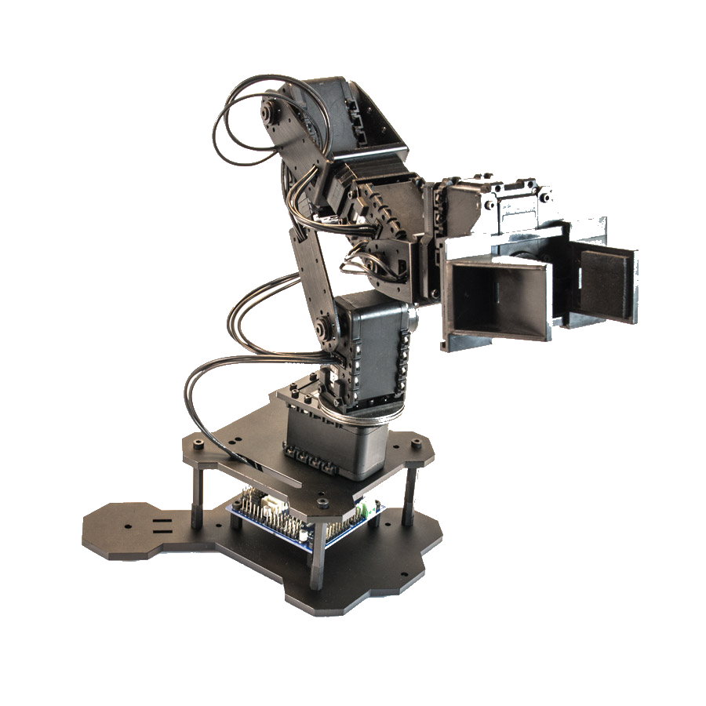
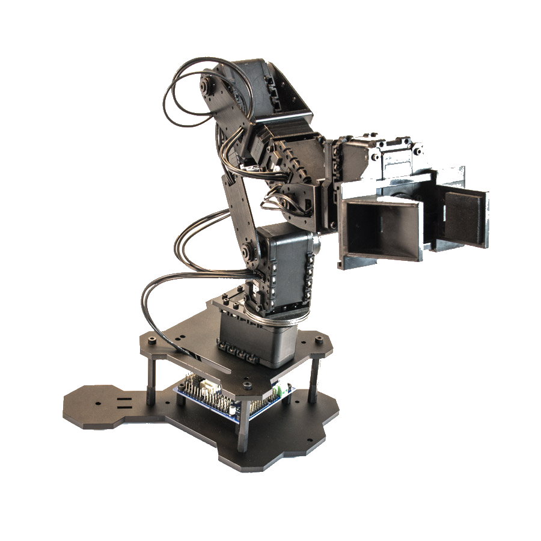
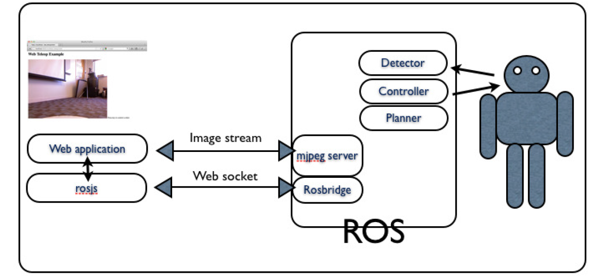
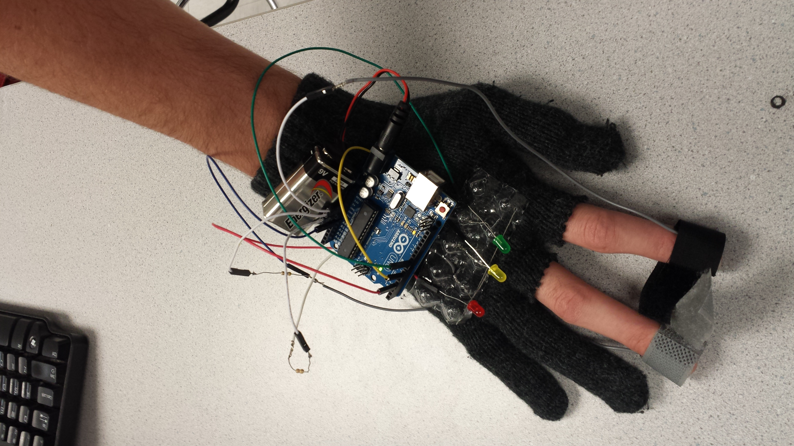

About
I am a senior computer science major in the the College of Engineering at Cornell University. My current research interests lie in the areas of human-robot interaction, computer vision, and augmented reality. I am also a member of the Cornell's Robotic Personal Assistants Lab run by Prof. Ross Knepper. Currently, I am working on a telepresence robot equipped with a 360 degree RGB-D sensor. The goal is to use the data coming from the sensor to enable the robot to seamlessly and smoothly navigate crowded pedestrian environments. In this website you can find information about me and my research. More details about me can be found in my resume.
Current Address
202 College Ave. #3
Ithaca, NY, 14850
Permenant Address
8415 Inverness Way
Chapel Hill, NC, 27516
Phone
Home: (919)-933-3314
Cell: (919)-257-0726
Networks:
Projects
TurtleBot with PhantomX Pincher Robot Arm
 

Augmented Reality Remote Arm Controller - Codename: Gatlin
The camera on the back of the mobile device captures the user's hand pose while the screen displays the calculated
location of the hand overlaid on top of the 3D view from the Kinect on the robot. The mobile device's screen
acts like a window into the robot's perspective. The mobile device's gyroscopes allow precise tracking of orientation, and utilizing the gyroscopes makes the app much more immersive
since when you turn the mobile device, the view rotates accordingly. The arm's end effector would then copy the pose of the user's hand, allowing the user to reach
for an object and grasp it as if the user was standing where the robot is. The pros of this method is that only a mobile device
with a camera is needed to capture hand movements. Thus this will allow the robot controller to be packaged in a app and anyone with a smartphone
could then download it to their phone and control the robot remotely. (security authentication will be added so not just anyone can access the robot)
Although I have just begun to experiment with Unity and ROS, the combination seems to have many possibilities and applications.
Here is a short video demo of an initial prototype for the robot's Android controller app, showing a visualization of the RGBD data from the
Kinect, joystick controls for moving the robot, and gyro controls for viewing the 3D pointcloud.
Partners: Zach Zweig-Vinegar (zzv2), Isaac Qureshi (iaq3)
The mobile app was created using Unity and the Unity-ROS connection was implemented using the ROS packages "rosbridge" and "web_video_server". Here is a schema for another ROS web interface that we used as a guide during the beginning of this project.
Click here to read more...
Stress Detector Glove (Galvanic Skin Response)
Team Members: Zach Zweig-Vinegar, Fred Kummer
Final class project for ENGRI 1820: Electricity Lights Camera Action: Nanoengineering for the Future of Bits and Bytes.
It is a simple lightweight stress sensor that fits around the wrist
which senses your stress level using heart and galvanic skin response
and indicates it with an LED of different colors. This could certainly
be useful to an ordinary person as a way of tracking everyday stress,
but also has potential medical applications, allowing doctors and patients
to quickly and easily determine the patients stress level, which would
be useful in managing a variety of illnesses from heart disease to anxiety disorders.
It was created by taking advantage of the fact
that the sensors and microcontrollers needed already exist and are easily accessible.
This allowed us to focus on integrating them into a functioning system rather
than worrying about the specifics of each sensor and to devote more time to the
problem of accurately interpreting the data and making them work as flexible electronics.
Resources: A tessellated surface that can fit around the wrist, an Arduino
microcontroller that can be used to interpret the data, a heart rate or pulse sensor,
a galvanic skin response sensor or the materials needed to construct one
(a fairly simple operation that mainly requires a conductive surface and an Arduino
to regulate the data), multicolored LEDs to indicate your stress level, batteries, and wire.
Arduino Thermistor Data Collector
Click to enlarge...
Click to download the sourceforge code...

This project utilizes a program that allows the user to easily collect temperature data from inexpensive thermistor temperature sensors connected to the computer through an Arduino. Contains a Java UI for the Arduino USB serial connection. Converts the voltage through the thermistor into a temperature. Allows the user to set the duration and sampling rate for the data collection. Provides real-time graphs of data... README
This program was included in a research paper entitled "Autonomous Thermal Data Collection" and presented
at the 44th Lunar and Planetary Science Conference (LPSC) in Huston, Texas.
All LPSC 2013 Mars Outreach for North Carolina Students Posters
Websites
CS 1300 Final Project - Ithaca Physics Bus

Partners: Victoria Beall, Bryan Rhodes, Logan McManus
"For this project, our client is a small company called Physics Bus, founded by Erik Herman. Physics Bus is a refurbished old style bus that travels to schools and events as a mobile physics exhibit. The mission of Physics Bus is two fold: first, to spark interest in physics and science in audiences of all ages through fun and interactive exhibits, emphasizing the artistic and creative aspects of physics rather than straight equations; second, the exhibits in the bus are made from also entirely recycled and/or junk materials. The current URL for the Physics Bus site is http://ithacaphysicsfactory.weebly.com/ (physicsbus.org), but our client has expressed his unhappiness with the overall theme, color scheme, and even logo of the site (which is just a slightly modified version of the logo for the parent organization, Physics Factory). What our client was looking for in their site was something that embodies the fun and interactive elements of their project. In particular, our client mentioned that he likes the look of hero images and requested a slideshow on the website's main page. He was also looking for a site that effectively uses social media, blogging, and videos/images to give users a taste of what the Physics Bus is like."
CS 2300 Final Project - Ma-Maria

Partners: Jarrod Ashley, Keshav Varma, Robert Oxer
"Our client is Ada Chan, an MBA candidate at Cornell. She is the founder of a company that intends to create an online solution to
match part time cleaners with customers (for the purposes of this project we may decide to focus on the Ithaca area). The website we
built is intended to be an alpha version of the company's final product and will mostly be used for product demos to potential
investors...
The website's main purpose is to connect customers who need household cleaning services with providers
in their local area. The content will reflect this purpose as well as make it as easy to use as possible.
We plan to incorporate many features, so it should be very simple to facilitate communication between
customers and cleaners. This will ensure that target audience enjoys this service as much as our client does."
- Assignment Description
- Design Journey Map
CS 2300 Project 3 - Image Album

This image gallery will be used to host professional pictures of me and my CS projects, so I want to reflect the coding aspect in the look and feel of my design. I used a black background because it adds more contrast to the text and most people associate black backgrounds with computer consoles or terminals. I also wanted the website to feel sleek and modern, just like the iOS and Android operating systems which is why I incorporated large icons and a CSS flip for interaction...
CS 2300 Project 2 - Music Library

This music library was my first website made using a database and it actually uses a text file to save data. You can filter your music by mood with tags to find a perfect song for any time of day. You can also search by Title, Artist, Album, Year, Rating or a combination. Simply change a search parameter to get a list of matching tracks...
Last updated 18th September 2015
Courses
Course information provided by the Courses of Study 2014-2015.
CS 2300: Intermediate Design and Programming for the Web
Web programming requires the cooperation of two machines: the one in front of the viewer (client) and the one delivering the content (server). INFO 1300 concentrates almost exclusively on the client side. The main emphasis in INFO 2300 is learning about server side processing. Students begin with a short overview of the PHP server-side scripting language, then look at interactions with databases, learning about querying via the database language SQL. Through a succession of projects, students learn how to apply this understanding to the creation of an interactive, data-driven site via PHP and the MYSQL database. Also considered are technologies such as Javascript and Ajax and techniques to enhance security and privacy. Design and usability issues are emphasized. A major component of the course is the creation of a substantial web site.
CS 3410: Systems Programming
Introduction to computer organization, systems programming and the hardware/ software interface. Topics include instruction sets, computer arithmetic, datapath design, data formats, addressing modes, memory hierarchies including caches and virtual memory, I/O devices, bus-based I/O systems, and multicore architectures. Students learn assembly language programming and design a pipelined RISC processor.
CS 4670: Intro to Computer Vision
An in-depth introduction to computer vision. The goal of computer vision is to compute properties of our world—the 3D shape of an environment, the motion of objects, the names of people or things—through analysis of digital images or videos. The course covers a range of topics, including 3D reconstruction, image segmentation, object recognition, and vision algorithms for the Internet, as well as key algorithmic and optimization techniques, such as graph cuts and non-linear least squares. This course emphasizes hands-on experience with computer vision, with several large programming projects.
CS 4752: Robotic Manipulation
Robotic manipulation is the ability for a robot to interact physically and deliberately in the world. Although long used in factories, robot manipulators will soon appear in home environments as well, helping us with daily tasks. This course covers the theory and concepts involved in programming a robot manipulator, including rigid body mechanics, kinematics, dynamics, path and trajectory planning, control, and stability. At the end of this course, the student is able to program a real manipulator arm to perform autonomous tasks.
CS 1300: Intro Design & Prog for Web
The World Wide Web is both a technology and a pervasive and powerful resource in our society and culture. To build functional and effective web sites, students need technical and design skills as well as analytical skills for understanding who is using the web, in what ways they are using it, and for what purposes. In this course, students develop skills in all three of these areas through the use of technologies such as XHTML, Cascading Stylesheets, and PHP. Students study how web sites are deployed and used, usability issues on the web, user-centered design, and methods for visual layout and information architecture. Through the web, this course provides an introduction to the interdisciplinary field of information science.
CS 2800: Discrete Structures
This course covers the mathematics that underlies most of computer science. Topics include mathematical induction; logical proof; propositional and predicate calculus; combinatorics and discrete mathematics; some basic elements of basic probability theory; basic number theory; sets, functions, and relations; graphs; and finite-state machines. These topics are discussed in the context of applications to many areas of computer science, such as the RSA cryptosystem and web searching.
MATH 2940: Linear Algebra for Engineers
Linear algebra and its applications. Topics include matrices, determinants, vector spaces, eigenvalues and eigenvectors, orthogonality and inner product spaces; applications include brief introductions to difference equations, Markov chains, and systems of linear ordinary differential equations. May include computer use in solving problems.
PHYS 2213: Physics II: Electromagnetism
Topics include electrostatics, behavior of matter in electric fields, DC circuits, magnetic fields, Faraday's law, AC circuits, and electromagnetic waves. At the level of University Physics, Vol. 2, by Young and Freedman, 13th ed.
CHEM 2090: Engineering General Chemistry
An intro chemistry course specifically for engineers covering basic concepts such as atoms and molecules, the bonding and reactivity of molecules, intermolecular forces in liquids and solids, gases, chemical equilibrium, thermodynamics, quantum mechanics, the periodic table, and kinetics.
CS 1112: Intro Computing Using MATLAB
Programming and problem solving using MATLAB – a language that has great numeric capabilities, as well as excellent plotting and graph functions. Topics included functions, arrays and vectors, iteration, recursion, complexity, dimension, randomness, simulation, the role of approximation, and MATLAB graphics.
CS 1300: Intro Design & Programming for Web
This course offers the opportunity to master the World Wide Web by learning to build websites of your own through HTML, CSS, Javascript, PHP, and JQuery. Throughout the semester we will be designing various webpages and discovering the science behind common web elements. However, the focus is not just on the code, layout and styling also comprise a large amount of the subject matter.
CS 2110: Object-Oriented Programming and Data Structures
As the next Java course after AP Computer Science, CS 2110 includes review of class structure and recursion as well as an in-depth study of data types. Further along in the course, more advanced topics are taught (e.g. complexity analysis and graph algorithms.)
ENGRI 1820: Electricity Lights Camera Action: Nanoengineering for the Future of Bits and Bytes
Hands on course with many labs, each devoted to the study of a common electronic component (e.g. Vacuum Tube Amplifiers, Transistors). Fabricated our own semiconductor devices (Solar Cells) in the nano lab and studied other forms of solid state electronics. In addition, there was also a final class project where my partner and I created a wearable lie detector glove with a Lilypad Arduino and galvanic skin response.
MATH 1920: Multivariable Calculus for Engineers
Learned how to apply the concepts of calculus to multiple variable functions. Introduced vector dot products, cross products, and how they can be used in differential/ integral systems. Studied parametric surfaces and volumes in conjunction with double and triple integrals.
PMA 1115: FWS Riot Acts - Public Performance & Protest
Explores the relationship between acts of public protest and those created for the theatre. An in-depth study of how the oppressed express themselves through writing and acting. Through in-class discussions and peer review, we honed our critical and persuasive writing while developing exact, articulate, and well-structured arguments.